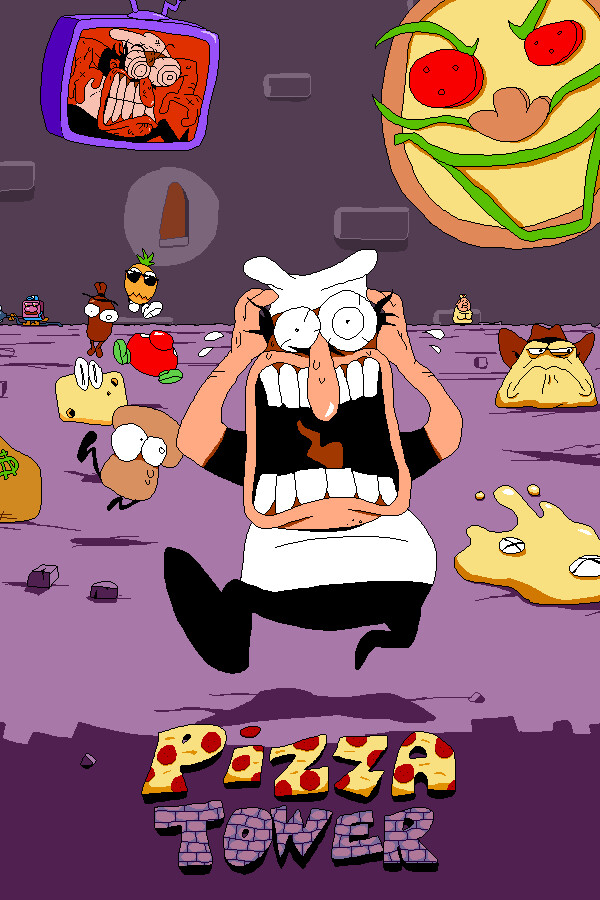
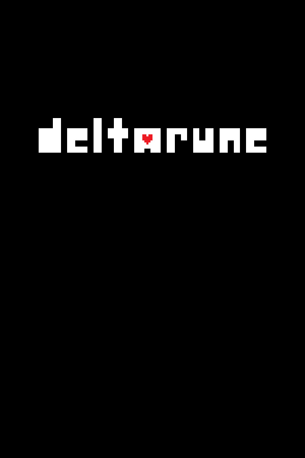
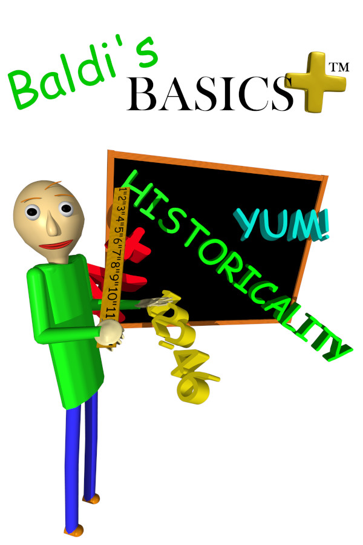
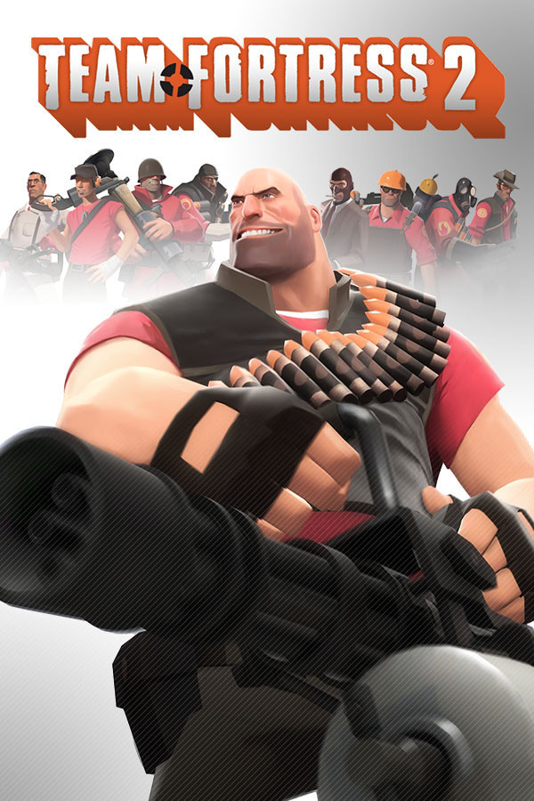
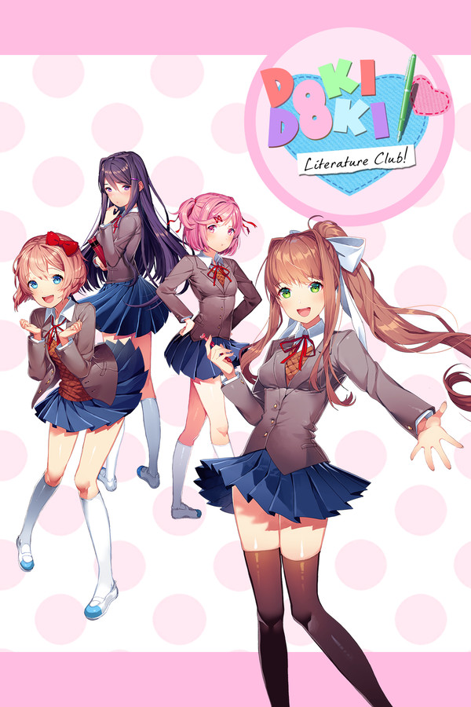

Top 5 Games

Pizza Tower
Man, this is just pure peak. I can't properly convey how much this game means to me. I'll say this though, If you are a fan of 2D platformers you are going to LOVE this game.

Deltarune
You can probably tell how much this game has been an inspiration to me just by hearing my music. But music isn't the only awesome thing about this game, this game some how got me to care about story in a video game.

Baldi's Basics Plus
At the time of writing this, this game is only in early access right now, but that does not mean this game is lacking. The gameplay is so fun, It's weird to think about it like this but Baldi's Basics is my favorite rougelike.

Team Fortress 2
I don't play this game much anymore since I got major burnout a while ago but the fact that I have 1092.7 hours in this game should say enough. Also when I played this more I was a Spy main.

Doki Doki Literature Club
This is weird, because story is never my focus in a game, nor do I really care for anime (I watched the original Pokemon show and that's basically it) but I really like this game. It's a once in a lifetime experience.